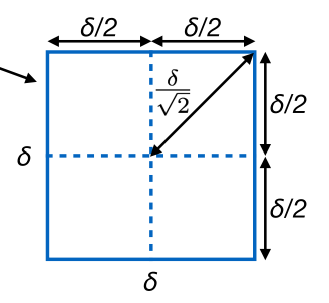
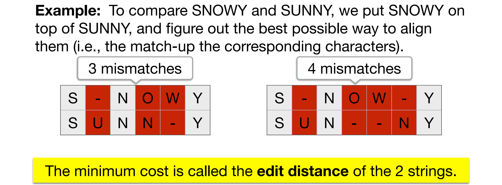

COMP3251A 问题集
还是采用与 COMP2119A 问题集 相同的形式记录一下进阶算法课中的一些 insights。这学期 workload 有点重，3251 学起来应该比 3252 轻松很多。
This article is a self-administered course note.
It will NOT cover any exam or assignment related content.
Selection
Selection 问题：选出第 \(k\) 大的数。\(O(n)\) Selection 算法简要介绍如下：
定义 \(\text{Select}(S,k)\)：
- 从 \(S=\{x_1,x_2,...,x_n\}\) 中选出 pivot \(v\)
- 根据 \(v\) 把数列分为三个子集 \(S_L(<v),S_v(=v),S_R(>v)\) [\(O(n)\) 复杂度]
- 若 \(k\leq |S_L|\)，输出 \(\text{Select}(S_L,k)\)
- 若 \(|S_L|<k\leq |S_L|+|S_v|\)，输出 \(v\)
- 若 \(|S_L|+|S_v|<k\)，输出 \(\text{Select}(S_R,k-|S_L|-|S_v|)\)
其实就是个快排小改造。定义：
- reasonable good pivot: \(1/4\leq \text{rank}\leq 3/4\), recursive step takes at most \(T(\frac{3n}{4})\)
- bad pivot: \(\text{rank}<1/4\) or \(\text{rank}>3/4\), recursive step takes at most \(T(n)\)
随机挑选 pivot，选到 reasonable good pivot 与 bad pivot 的概率均为 \(1/2\)。那么： \[ \begin{aligned} \mathbb{E} T(n)&\leq \frac{1}{2}\mathbb{E} T(\frac{3n}{4})+\frac{1}{2}\mathbb{E}T(n)+O(n) \\ \mathbb{E}T(n)&\leq \mathbb{E} T(\frac{3n}{4})+2O(n) \end{aligned} \] 应用 Master Theorem，有 \(a=1,b=\frac{4}{3},d=1\)，\(d=1>\log_b a=0\)。所以 \(\mathbb{E}T(n)=O(n)\)。
Fast Multiplication
整数乘法问题：给定两个 \(n\) 位二进制整数 \((x)_2,(y)_2\)，输出它们的乘积，一个 \((2n-1)\) 位二进制整数。
分治法：
- Divide: 令 \(x=x_L\times 2^{n/2}+x_R\), \(y=y_L\times 2^{n/2}+y_R\)
- Recurse: 递归计算 \(x_L y_L,x_L y_R,x_R y_L,x_R y_R\)
- Combine: \(xy=x_Ly_L\times 2^n+(x_Ly_R+x_Ry_L)\times 2^{n/2}+x_Ry_R\)
复杂度 \(T(n)=4T(n/2)+O(n)\)，应用主定理后得 \(T(n)=O(n^2)\)。
一个优化：注意到 \(x_Ly_R+x_Ry_L=(x_L+x_R)(y_L+y_R)-x_Ly_L-x_Ry_R\)，递归步骤中的四次乘法可以优化为三次。
复杂度 \(T(n)=3T(n/2)+O(n)\)，应用主定理后得 \(T(n)=O(n^{\log_2 3})=O(n^{1.59})\)。
类似的 trick 是 Strassen's Magical Idea，能将 \(O(n^3)\) 的矩阵乘法优化到 \(O(n^{2.81})\)。
Closest Pair
平面最近点对问题：\(n\) 个点 \((x_1,y_1),(x_2,y_2),...,(x_n,y_n)\)，输出距离最近的点对。
解法还是很巧妙的，仍然是分治思想。
- Divide: 把所有点按照 \(x\) 坐标排序，画出中线 \(L\) 使得其两侧均有 \(n/2\) 个点。这个过程是 \(O(n\log n)\) 的。
- Recurse: 递归找到左组内以及右组内的最近点距 \(\delta_L,\delta_R\)
- Combine: 求出左右组间的最近点距 \(\delta_{mid}\)
显然，如何找到组间的最近点距需要仔细设计。令 \(\delta=\min(\delta_L,\delta_R)\)，只考虑 \(x\in[L-\delta,L+\delta]\) 区间中的点，把它们按照 \(y\) 坐标排序，得到点序列 \(\{p_1,p_2,...,p_m\}\)。对于 \(p_i\)，只需要记录它和 \(p_{i+1},p_{i+2},...,p_{i+7}\) 随后这 7 个点的距离。
为什么偏偏是 7 个点？这个数字基于一个重要的结论：

把该正方形划分为四个边长为 \(\delta/2\) 的子正方形，在子正方形中，任意点距都 \(\leq \delta/\sqrt{2}<\delta\)；因此每个子正方形中最多只能有一个点，否则就将与已知的单侧最小点距为 \(\delta\) 的结论相冲突。所以，这整个正方形中最多有 4 个点。
现在考虑组间区间中的一个点 \(p_i=(x_i,y_i)\)，将它与 \(y>y_i\) 的点构成点对；如果比 \(\delta\) 更小的点距存在，对应的点一定位于 \([L-\delta \sim L+\delta,y_i\sim y_i+\delta]\) 这一长方形内。该长方形由左右两侧两个 \(\delta\times \delta\) 的正方形组成，根据上文得出的结论，其中最多含有 \(4\times 2=8\) 个点。除去 \(p_i\) 本身，需要比较的点最多只有 7 个。
确实巧妙！这个算法的复杂度递归形式是 \(T(n)=2T(n/2)+O(n\log n)\) [bottleneck 是对组间区间中的点按照 \(y\) 坐标排序]，解得 \(T(n)=O(n\log^2 n)\)。
DFS & BFS
无甚好讲，主要是一些名词解释。
无向图的 DFS 树。
- DFS 树的树边 tree edges.
- foward edges. node \(\to\) a non-child descendent.
- back edges. node \(\to\) ancestor.
- cross edges. node \(\to\) a node that has been already explored (explored: pre-ordered & post-ordered).
应用：
- DFS 判环 (找 back edges)
- DAG 的拓扑排序：DFS 后序遍历的逆序。起始节点入度为 0。
- SCC：
- 初始化：求反图 \(G_R\) 并 DFS 一次得到后序遍历 \(\text{post}\)。
- 求 SCC：回到图 \(G\)，取当前图中 \(\text{post}[x]\) 最大的点 \(x\) 作为起始点，DFS 一遍找到包含 \(x\) 的 SCC，标号，并从 \(G\) 中删除该 SCC (点和所有连向/连出的边)。重复此过程直至所有 SCC 被找出。
- 原理：source SCC 易找到 (\(\text{post}[x]\) 最大的点 \(x\) 一定在 source SCC 中) 但 sink SCC 不易找到。但 \(G\) 的 sink SCC 就是 \(G^R\) 的 source SCC。
SPT (Shortest Path Tree) 最短路径树：最短路径生成的树。
Dijkstra 算法的本质就是不断扩展 SPT 直到图上的点均被覆盖。每次迭代，找到离最短路径树距离最近的节点 \(v\) (堆优化)，加入 SPT，并由 \(v\) 更新 SPT 到余下所有点的距离。复杂度 \(O((|E|+|V|)\log |V|)\)。[边复杂度对应入堆，点复杂度对应出堆]
Bellman-Ford 算法。由于图中有负权边 (但无负环)，Dijkstra 设计的 "clever order" 失效了，因此需要回到 “stupid way”。考虑到任意一条最短路长度 \(\leq |V|-1\)，将所有边松弛 \(|V|-1\) 次即可。复杂度 \(O(|V||E|)\)。队列优化是 SPFA。
Floyd-Warshall 算法。多源最短路，有负权边无负环。\(f[i,j,k]\) 表示从 \(i\) 到 \(j\)，考虑 \(1..k\) 作为中间点的最短路。
- \(f[i,j,k]=\min(f[i,j,k-1], f[i,k,k-1]+f[k,j,k-1])\)。
DAG 求最短路。很明显，按照拓扑序松弛即可。复杂度 \(O(|V|+|E|)\)。
MST
这里也没什么好讲的，随便记一下。
Prim 算法。Dijkstra 每次选择离 SPT 距离最近的点扩展，Prim 每次选择 MST 邻接点中边权最小的扩展。实现基本和 Dijkstra 一致，但更简单：不再需要 \(\text{dist}\) 数组，只需要维护一个布尔 \(\text{vis}\) 数组，向堆中加入 \((v,e)\) 即可。
Kruskal 算法。我第一个学会的最小生成树算法，讲起来还有点怀念。并查集 Disjoint set 优化后能跑到 \(O(m\log n)\)。
Greedy Algorithm
介绍了几个简单的贪心模型。
任务调度 (Job scheduling)：有一系列任务。任务 \(i\) 需要 \(t_i\) 时间，deadline 是 \(d_i\)。完成所有任务是否可行？
贪心：\(d_i\) 越早，任务排序越前。证明：
- 若按照该顺序，任务 \(j\) 无法在 \(d_j\) 前完成，说明 \(1..d_j\) 时间区间内需要完成的任务量 \(s_1+s_2+{...}+s_j> d_j\)。无解。
区间调度 (Interval scheduling)：有一系列区间 \([s_i,f_i]\)，选择尽量多的区间使他们互不相交。
贪心：结束时间 \(f_i\) 越早，任务排序越前。证明：
- 假设贪心算法非最优。
- 令 \(i_1,i_2,...,i_k\) 为贪心解，\(j_1,j_2,...,j_m\) 为最优解。
- \(r\) 为贪心解与最优解的最大公共前缀和的长度，即 \(i_1=j_1,i_2=j_2,...,i_r=j_r\)。
- 考虑 \(i_{r+1}\) 与 \(j_{r+1}\)；根据贪心策略，\(i_{r+1}\) 的结束时间一定不晚于 \(j_{r+1}\) 的结束时间。那么，将最优解中的 \(j_{r+1}\) 换成 \(i_{r+1}\) 并不会影响后续的选择。
- 重复以上的调整，最终 \(r\) 增加到 \(n\)，贪心的最优性得证。
最小化延迟安排 (Lateness minimum)：有一系列任务。任务 \(i\) 需要 \(t_i\) 时间，deadline 是 \(d_i\)。若任务从时间 \(s_i\) 开始，其延迟被定义为 \(L_i=\max(0,s_i+t_i-d_i)\)。安排这一系列任务，最小化 \(L=\max L_i\)。
贪心：\(d_i\) 越早，任务排序越前。证明：
- 任意非贪心算法中一定存在相邻逆序对 \(i,j\)，\(i\) 排在 \(j\) 前面，deadline \(d_i\) 却在 \(d_j\) 后面。
- \(L_i=f_i-d_i,L_j=f_j-d_j\) 且 \(d_i>d_j,f_i<f_j\)
- 若交换该逆序对，有 \(f_i'=f_j,f_j'<f_j\)。可以发现 \(L_i'>L_i\) 但 \(L_i'<L_j\) (因为 \(d_i>d+j\))；\(L_j'<L_j\) (因为 \(f_j'<f_j\))。也就是说，交换之后 \(L_i\) 增加了，但并未超过 \(L_j\)；\(L_j\) 则减少了。即 \(\max(L_i,L_j)>\max(L_i',L_j')\)。
- 重复以上过程，任意解都能被调整为贪心解，且 \(L\) 单调不升。贪心最优性得证。
DP
几个简单的 DP 模型。
编辑距离 (Edit distance)：给定字符串 \(X[1..m]\) 与 \(Y[1..n]\)，求它们的编辑距离。

令 \(f[i, j]\) 为 \(X[1..i]\) 与 \(Y[1..j]\) 之间的编辑距离。经典尾部 DP，考虑 \(X[i]\) 与 \(Y[j]\) 对齐的成本。三种情况：\(X[i]\) 对齐占位符，从 \(f[i-1,j]\) 转移；\(Y[j]\) 对齐占位符，从 \(f[i,j-1]\) 转移；\(X[i]\) 对齐 \(Y[i]\)，考虑这两个字符是否相等，并从 \(f[i-1,j-1]\) 转移。
最长上升子序列 (Longest increasing subsequence, LIS)。太经典就不讲了。
背包问题 (Knapsack problem)。真怀念！
- 01 背包倒序枚举容量
- 完全背包正序枚举
- 多重背包朴素 \(O(NVS)\)，二进制优化 (将每种物品的数量做二进制拆分后跑 01 背包) \(O(NV\log S)\)
- 分组背包 (每组跑一遍 01 背包)
Network Flow
其实有点没想到会讲网络流，感觉已经是相当高级的算法了。
Ford-Fulkerson 求最大流。
残差网络 (residual network) \(G_f\) 构建：
- 正向边 forward edge \((u,v)\)，残差为 \(c(u,v)-f(u,v)\) [容量减流量]
- 反向边 backward edge \((u,v)\)，残差为 \(f(u,v)\) [流量]
- (去掉残差为 0 的边)
- 注意这里的正向/反向只是一个标签，不代表边的有向性。原图是有向图，而残差网络是无向图。
跑增广路：
- 在 \(G_f\) 里找一条从 \(s\) 到 \(t\) 的路径 (若 \(s\) 与 \(t\) 不连通，增广完毕得到最大流)
- 若该路径上的最小残差为 \(\epsilon\)，对路径上的每一条边 \((u,v)\)：
- 如果是正向边，增流 \(f(u,v)=f(u,v)+\epsilon\)
- 如果是反向边，减流 \(f(u,v)=f(u,v)-\epsilon\)
最大流最小割定理。可以证明一切流都不能超过任何 s-t 割，所以经过图的最大流就是图的最小割。直观上理解，通过能力最弱的断面 (最小割) 的总流量就是整个网络的最大流量。
- \(c(S,T)=\sum_{e\in\text{out}(S)} c(e)\)
- \(c_{\text{other}}(S',T')\geq c_{\min}(S,T)\geq v_{\max}(f)\geq v_{\text{other}}(f')\)
一些应用问题。
Edge-disjoint paths (不相交路径)：找到 \(G\) 中由 \(s\) 到 \(t\) 的不相交路径集合。\(G\) 中的每条边至多出现在一条此类路径中。
- 所有边容量设为 \(1\) 跑一遍最大流即可。流量是不相交路径的数量，所有流为 \(1\) 的边共同组成不相交路径集合。
Bipartite matching (二分图匹配)。加源汇点，源点连左图，右图连汇点，容量无限大；二分图边容量设为 \(1\) 跑最大流。
Image segmentation (图像分割)。将像素分为前景与后景。
- max likelihood: \(\arg_{F,B}\max\prod_{p\in F}f_p \cdot \prod_{p\notin F}b_p\cdot \prod_{(p,q):p\in F,q\in B}c_{pq}\)
- max log-likelihood: \(\arg_{F,B}\max\) \(\sum_{p\in F} \log f_p+\sum_{p\notin F}\log b_p + \sum_{(p,q):p\in F,q\in B}\log c_{pq}\)
- min negative log-likelihood: \(\arg_{F,B} \min \sum_{p\in F} \log (1/f_p)+\sum_{p\notin F}\log (1/b_p) + \sum_{(p,q):p\in F,q\in B}\log (1/c_{pq})\)
- 源点向每个像素 \(p\) 连边，容量为 \(\log (1/f_p)\)；每个像素向汇点连边，容量为 \(\log(1/b_p)\)；相邻像素 \((p,q)\) 连边，容量为 \(\log(1/c_{pq})\)
- 跑最小割即可
P & NP
这个话题感觉我至少已经学过三遍了。Princeton 算法课学过一遍，NUS 计算理论课学过一遍 (虽然考得稀烂)，这里就不再赘述了。
Reference
This article is a self-administered course note.
References in the article are from corresponding course materials if not specified.
Course info: COMP3251, prof. Huang Zhiyi
Course textbook: (supplementary) Algorithms, S. Dasgupta, C. H. Papadimitriou, and U. Vazirani